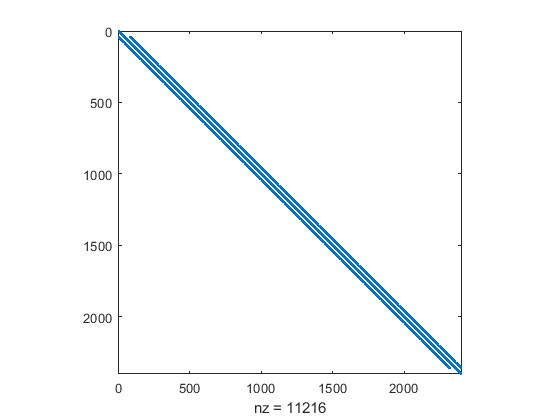

ELEC 4700 Assignment-2 Finite Difference Method
Due: Sunday, Feb. 24, 2019 11:59PM By: Narrthanan Seevananthan
clear; %V = Vo @ x = 0 %V = 0 @ x = L L = 3; %Length of the rectangular region W = 2; Vo = 1; %Initial voltage %mesh density and mesh points dx = 0.05; dy = 0.05; nx = L/dx; ny = W/dy; VXY = -2*(1/(dx^2) + 1/(dy^2)); VX = 1/(dx^2); VY = 1/(dy^2); G = zeros(nx*ny,nx*ny); B = zeros(nx*ny,1); %x = i %y = j for x = 1:nx for y = 1:ny n = y + (x-1)*ny; if x == 1 || x == nx G(n,:) = Vo; B(n) = 1; elseif y == 1 || y == ny G(n,:) = 0; else nxp = y + (x-2)*ny; %previous x value nxn = y + x*ny; %next x value nyp = y-1 + (x-1)*ny; %previous y value nyn = y+1 + (x-1)*ny; %next y value G(n,n) = -VXY; G(n,nxp) = VX; G(n,nxn) = VX; G(n,nyp) = VY; G(n,nyn) = VY; end end end V = G\B; V = reshape(V,[ny,nx]); figure('Name','Visualize sparsity pattern'); %spy(G) surf(V)
Warning: Matrix is singular to working precision.